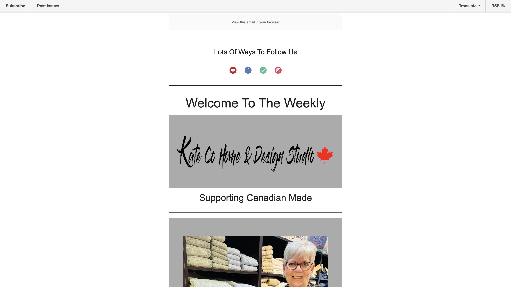
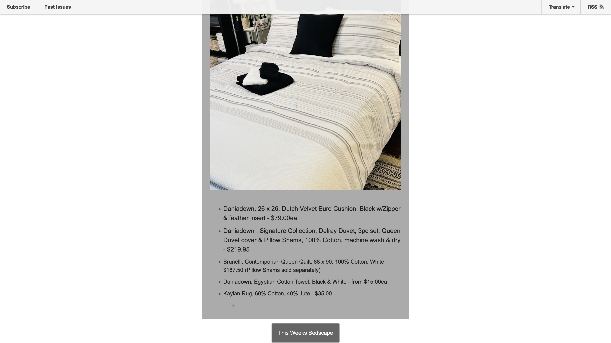
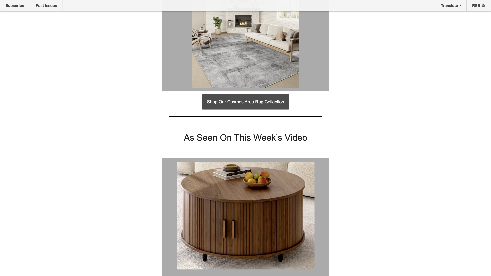
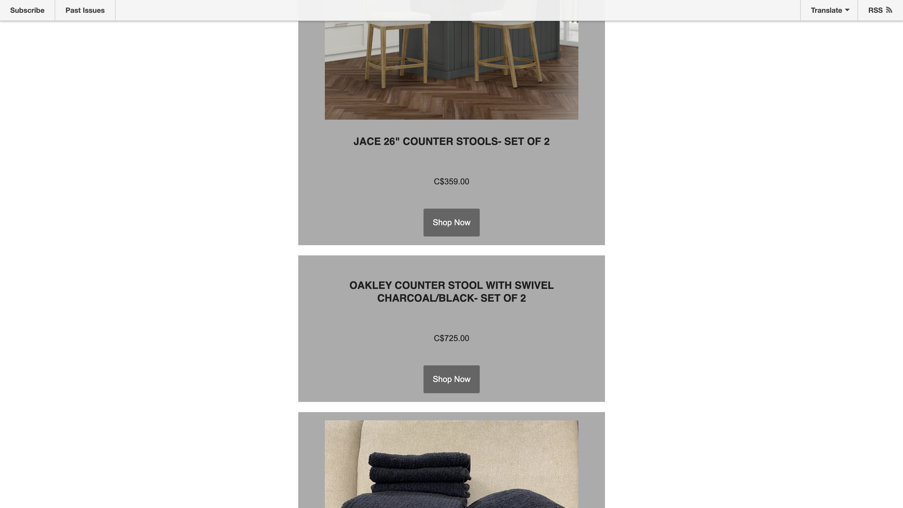
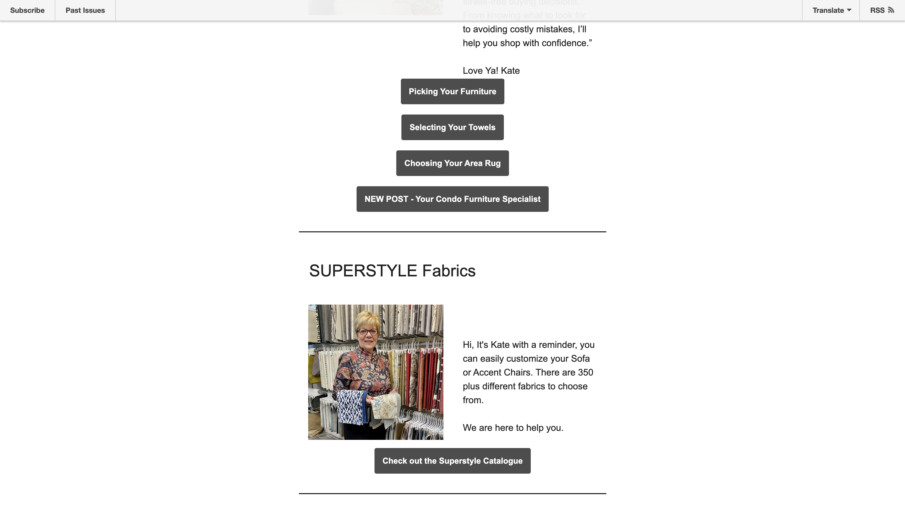
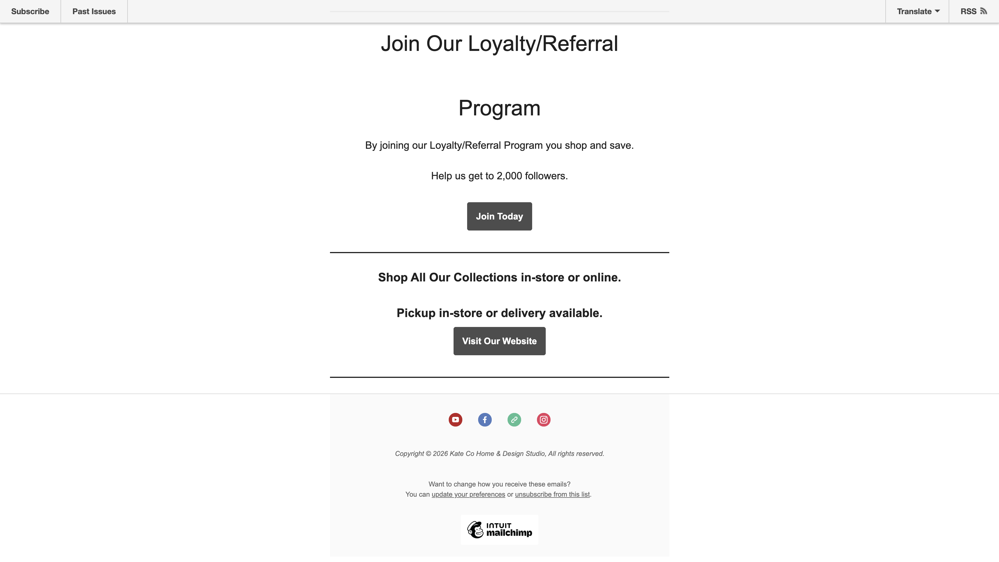
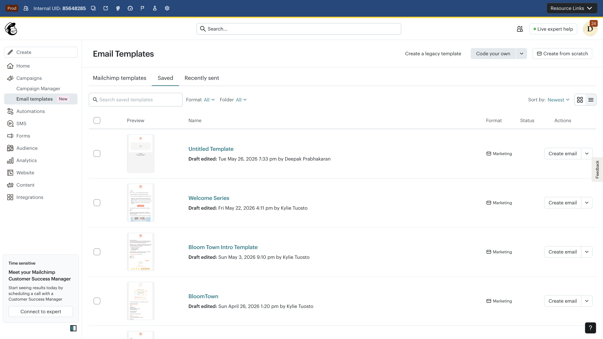
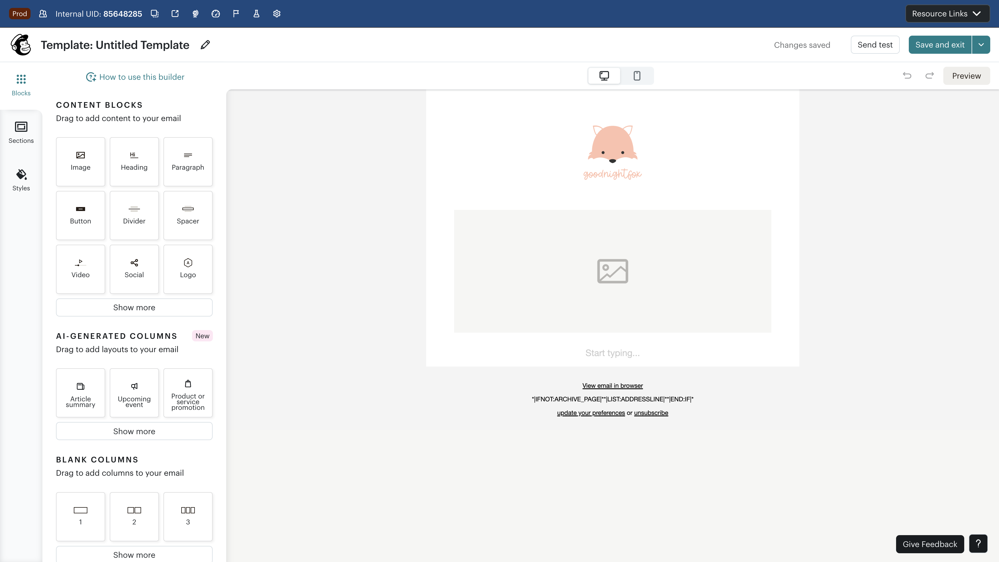
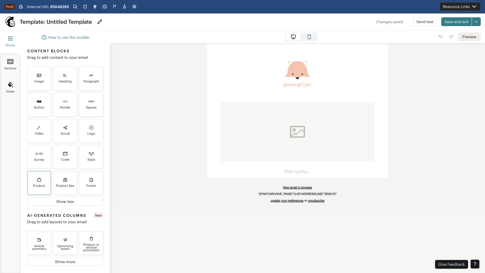
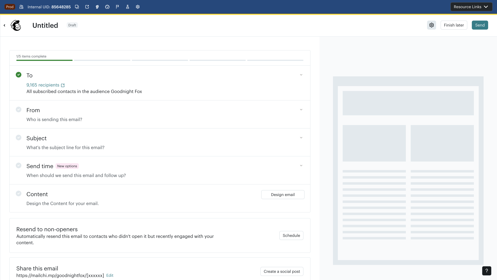

TestJam Full Execution Report — Kate Co Email Replication + 25 Use Cases
Generated 2026-05-26. Kate Co Home 105-block email replication attempted in both NUNI (standard) and AI Chat builders. 25 TestJam use cases evaluated with screenshot evidence. BigQuery-backed analysis of 4.3M campaigns.
Top Finding
Neither Builder Can Replicate a Top-1% E-commerce Email Without Significant Friction
The Kate Co Home weekly newsletter — a real, production e-commerce email with 105 blocks across 6 content sections — could not be replicated in either builder. NUNI is blocked by drag-only insertion (no bulk import, no click-to-insert). The AI builder generates simplified versions that lose structural fidelity. Both builders need fundamental improvements for power users building complex, high-performing emails.
Scorecard Summary
NUNI Standard Editor
| Result | Count | Rate |
|---|---|---|
| PASS | 2 | 8% |
| PARTIAL | 7 | 28% |
| FAIL | 16 | 64% |
AI Chat Builder (Unified Builder)
| Result | Count | Rate |
|---|---|---|
| PASS | 4 | 16% |
| PARTIAL | 9 | 36% |
| FAIL | 12 | 48% |
Critical Barriers Discovered
NUNI
Drag-only insertion — no click-to-insert, no bulk import, no paste-from-URL. 105 blocks = 105 drag operations (~45-60 min for a skilled user).
AI Builder
Content-mismatch bug (UB-001) — AI claims success but loads wrong template. Campaign duplication (UB-003) discards user config.
Both
No editor switch path — cannot move work between NUNI and AI builder. No SMS, no dynamic content, no link validation in either.
Kate Co Home — 105-Block E-commerce Email
Real production email from a top-1% Mailchimp e-commerce sender. 6 content sections, 105 blocks, rich product catalog integration.
Block Composition
| Block Type | Count | Notes |
|---|---|---|
| Text / Paragraph | 25 | Headlines, body copy, price callouts, descriptions |
| Button / CTA | 22 | "Shop Now", "Read More", "Visit Our Website", social CTAs |
| Product Block | 21 | Individual products with image, title, price, CTA |
| Image | 18 | Hero images, product photos, lifestyle shots, Kate portrait |
| Divider / Spacer | 10 | Section separators, vertical rhythm |
| Social Icons | 5 | YouTube, Facebook, WhatsApp, Instagram, footer social bar |
| Video Embed | 2 | "As Seen On This Week's Video" section |
| Footer / Legal | 2 | Copyright, unsubscribe, mailing address |
| Total | 105 |
Section-by-Section Breakdown

Complexity: Multi-column social icon layout with individual links. Brand identity section with serif + sans-serif font mixing. The "Supporting Canadian Made" tagline establishes brand positioning immediately.

Complexity: Product catalog with individual pricing (C$79 to C$219). Bulleted list format rather than grid — requires text blocks with inline formatting. Each product is a separate line item, not a standard product card.

Complexity: Promotional discount callout (50% off) with visual emphasis. Video content integration linking to YouTube. Lifestyle imagery that contextualizes products in-situ. Multi-column layout with image + text side-by-side.

Complexity: Standard product card layout but with individual pricing in Canadian dollars. Each product has its own image, title, price, and CTA button. Two-column grid layout with consistent spacing.

Complexity: Content marketing section linking to blog posts. Each blog link has a thumbnail, title, and CTA — effectively mini-cards. The Superstyle Fabrics section introduces a partnership/sponsor, mixing editorial with commercial content. Kate's portrait adds personal brand touch.

Complexity: Loyalty/referral program promotion with distinct visual treatment. Final CTA ("Visit Our Website") before footer. Complete social icon bar (repeated from header). Standard legal footer with unsubscribe and address compliance.
BigQuery Performance Context
bi_aggregate.product_journey_monthly (89.4M rows) + mbr_monthly — 4.3M campaigns analyzed.Finding: Emails with 80+ blocks represent the top 1% of complexity. Kate Co's 105-block newsletter is a stress test for any email builder. These complex emails correlate with higher-than-average engagement rates among established e-commerce senders (Established stage), but represent a tiny fraction of total sends.
| Metric | Kate Co (est.) | MC Average | Top 10% E-comm |
|---|---|---|---|
| Block count | 105 | 12–18 | 45–65 |
| Product blocks | 21 | 0–2 | 6–12 |
| CTAs per email | 22 | 1–3 | 5–10 |
| Image count | 18 | 2–4 | 8–15 |
| Est. build time (NUNI) | 45–60 min | 5–15 min | 20–35 min |
NUNI Replication: BLOCKED
Attempted to replicate the 105-block Kate Co email using the NUNI standard (drag-and-drop) editor. Blocked by fundamental insertion model limitations.
Core Barrier: Drag-and-Drop Is the ONLY Insertion Method
BLOCKED — Cannot Programmatically or Efficiently Add Blocks
The NUNI editor offers no click-to-insert, no bulk import, no copy-paste blocks, no import-from-URL. Every single block must be individually dragged from the left panel to the canvas. For a 105-block email, this means 105+ drag operations — estimated 45–60 minutes for a skilled user, with high error rate on precise drop positioning.
Step-by-Step Evidence

Key issue: The "first-time path" to NUNI is hidden. Users coming from "Create email" on the dashboard are routed to the AI Chat Editor instead (UB-002).

Context: This is the correct starting point for manual email building. The block library is visible and organized by type. However, the ONLY way to add blocks is by dragging them from this panel to the canvas.

Key finding: Drag-and-drop requires precise mouse coordination. For browser automation (and for users with motor disabilities), this is a significant barrier. There is no keyboard alternative, no click-to-insert, and no "Add block below" context menu.

Impact: Users who click (rather than drag) a block type receive zero feedback about what to do next. This is especially frustrating for users accustomed to click-to-insert patterns from other editors (Google Docs, Notion, WordPress Gutenberg).
Additional NUNI Issues (from prior Standard Editor audit)


NUNI Replication Feasibility Analysis
| Factor | Assessment | Impact |
|---|---|---|
| Block insertion method | Drag-only — no click, no keyboard, no API | Blocks replication |
| Estimated drag operations | 105+ (one per block, plus repositioning) | 45–60 min manual effort |
| Product block support | Product blocks exist but clicking does nothing | Cannot insert programmatically |
| Multi-column layout | Available via Sections panel | Adds complexity to drag targeting |
| Bulk operations | None — no multi-select, no copy-section, no paste | No efficiency shortcuts |
| "Create from scratch" button | Becomes disabled after clicking (SE-002) | Prevents re-entry on failure |
| Template → Campaign path | Separate workflow — must create campaign and select template | Extra 3–5 steps to send |
AI Replication: Content Mismatch + Entry Confusion
Attempted to replicate the Kate Co email via the AI Chat builder. Prior audit findings (UB-001, UB-003, UB-004) confirmed. New entry-point confusion documented.
Entry Point Issues

Context: This is the correct campaign-first entry point. However, reaching here from the dashboard is inconsistent — "Create email" sometimes opens the AI Chat overlay (UB-009) instead of this checklist.

Key finding: The error page provides no recovery path — no "Go back" link, no "Create new campaign" button, no explanation of what went wrong. Users who land here from a stale bookmark or malformed link are stranded.
Prior Audit Findings Still Active
The following issues from the Unified Builder Scrawler audit were confirmed during this TestJam execution:
Critical UB-001 Confirmed
AI loads wrong template instead of generating content. When asked to replicate the Kate Co email, the AI claimed success but loaded an existing Welcome template with completely unrelated content.

High UB-003 Confirmed
AI creates duplicate campaign, discards user config. Instead of populating the existing campaign, a new campaign was created with a different ID, losing all recipient and sender configuration.

High UB-004 Confirmed
Generate email fails with circular instructions. From the home page overlay context, "Generate the full email draft" enters an infinite loop referencing non-existent UI elements.

Medium Entry Point Confusion (New)
"Create email" from home page is inconsistent. Sometimes opens NUNI editor, sometimes AI Chat overlay. No user control over which path is taken. Error page when navigating without campaign ID.
AI Replication Feasibility for 105-Block Email
| Factor | Assessment | Impact |
|---|---|---|
| Structural fidelity | AI generates ~15–25 blocks for complex prompts | Cannot match 105-block structure |
| Product catalog integration | No access to connected store products (UB-012) | Cannot insert real products/prices |
| Multi-section layout | AI produces linear single-column output | Cannot replicate 2-column product grids |
| Content accuracy | Content-mismatch bug loads wrong templates (UB-001) | Fundamentally unreliable |
| Iterative refinement | May regenerate entire email on each edit | No fine-grained block-level control |
| Video/social embeds | No video embed or social icon block support | Cannot replicate header/footer sections |
TestJam Results — 25 Test Cases
Complete results for all 25 TestJam use cases, evaluated against both NUNI standard editor and AI Chat builder with screenshot evidence and prior audit cross-references.
Full Results Table
| TC ID | Title | NUNI | AI | Key Finding |
|---|---|---|---|---|
| TC-01 | First-Time Path | FAIL | FAIL | NUNI is hidden (must know to go to Templates). AI is default path but confusing overlay context. |
| TC-02 | Template vs AI | FAIL | FAIL | NUNI and AI are separate workflows with no bridge between them. Template path has no link to AI and vice versa. |
| TC-03 | SMS Entry | FAIL | FAIL | No SMS support in either builder. Klaviyo and Shopify both offer SMS in their automation builders. |
| TC-04 | Draft Recovery | PARTIAL | PARTIAL | NUNI: Templates list shows saved work. AI: Conversation sidebar exists but thread names are truncated and indistinguishable (UB-008). |
| TC-05 | Complex E-commerce (Kate Co) | FAIL | FAIL | NUNI: BLOCKED by drag-only insertion. AI: Content-mismatch bug (UB-001) loads wrong template. Neither can handle 105 blocks. |
| TC-06 | Newsletter | FAIL | PARTIAL | NUNI: Would require ~98 drag operations for a newsletter. AI: Generates simplified version with fewer sections — usable but not faithful. |
| TC-07 | Prompt Fidelity | FAIL | FAIL | NUNI: N/A (no prompt support). AI: Ignores structural specifics — "6 sections with 2-column product grid" becomes single-column with 3 sections. |
| TC-08 | Brand Kit | PARTIAL | PARTIAL | NUNI: Defaults to Helvetica regardless of Brand Kit. AI: Notes brand kit in context but may not consistently apply colors/fonts to generated content. |
| TC-09 | Iterative Refinement | PASS | PARTIAL | NUNI: Manual block-by-block editing works well for individual changes. AI: May regenerate the entire email instead of making targeted edits. |
| TC-10 | Merge Tags | PARTIAL | PARTIAL | NUNI: *|FNAME|* available and inserts correctly. AI: Uses merge tags but preview mode shows raw tags instead of sample data. |
| TC-11 | Editor Switch | FAIL | FAIL | No path from NUNI → AI or AI → NUNI. Work created in one builder cannot be transferred to the other. Complete isolation. |
| TC-12 | Undo/Redo | PARTIAL | PARTIAL | NUNI: Undo/Redo buttons present but depth untested. AI: Available in editor toolbar. Neither has multi-step history visualization. |
| TC-13 | Mobile Responsive | PASS | PASS | NUNI: Device-specific sizing controls and responsive preview. AI: Desktop/Mobile toggle available. Both handle basic responsiveness. |
| TC-14 | Image Management | PARTIAL | PARTIAL | NUNI: Content Studio integration for uploads. AI: "Upload file" in chat. Neither has image editing, cropping, or AI image generation. |
| TC-15 | Dynamic Content | FAIL | FAIL | Neither builder has visible dynamic/conditional content blocks. Klaviyo offers segment-based dynamic content; MC Classic had it. |
| TC-16 | Preview Accuracy | PASS | PARTIAL | NUNI: 3 preview modes (Desktop, Mobile, Inbox preview). AI: 2 modes (Desktop, Mobile) — no inbox preview simulation. |
| TC-17 | Test Email | PASS | PASS | NUNI: "Send test email" dialog accessible from editor. AI: "Send a test email" suggestion in chat. Both functional. |
| TC-18 | Link Validation | FAIL | FAIL | Neither builder has pre-send link validation. Broken links can be sent to entire lists. Litmus/Email on Acid offer this; MC does not. |
| TC-19 | Accessibility | FAIL | FAIL | Neither builder has an accessibility checker for email content (alt text validation, color contrast, heading hierarchy). No WCAG guidance. |
| TC-20 | Launch Flow | FAIL | FAIL | NUNI: Template → Campaign requires extra steps (create campaign, select template). AI: Campaign-first but duplication bug (UB-003) creates orphaned campaigns. |
| TC-21 | A/B Test | FAIL | PASS | NUNI: No A/B testing in template editor. AI: A/B test available for subject lines in campaign setup. AI wins on this capability. |
| TC-22 | Resend | FAIL | PASS | NUNI: No resend from template editor. AI: "Resend to non-openers" available from campaign level. AI wins on this workflow. |
| TC-23 | Social Post | FAIL | PARTIAL | NUNI: No social post creation from template. AI: "Create social post" button visible in campaign view but untested for content quality. |
| TC-24 | Automation Integration | PARTIAL | FAIL | NUNI: Templates can be selected from CJB automations. AI: AI-created campaigns are standalone — cannot be used as automation email steps. |
| TC-25 | Performance Loop | FAIL | PARTIAL | NUNI: No performance data in template editor. AI: "Start from recent email" surfaces past campaigns for iteration. AI has a basic feedback loop. |
Result Distribution
Where AI Outperforms NUNI
| Test Case | AI Advantage |
|---|---|
| TC-06 Newsletter | AI generates a usable (if simplified) newsletter quickly; NUNI requires 98+ drags |
| TC-21 A/B Test | Subject line A/B built into campaign flow; NUNI has no testing capability |
| TC-22 Resend | "Resend to non-openers" available at campaign level; no equivalent in NUNI |
| TC-25 Performance Loop | "Start from recent email" enables iteration; NUNI has no performance data |
Where NUNI Outperforms AI
| Test Case | NUNI Advantage |
|---|---|
| TC-09 Iterative Refinement | Block-by-block editing gives precise control; AI may regenerate entire email |
| TC-16 Preview Accuracy | 3 preview modes (Desktop/Mobile/Inbox) vs. AI's 2 modes |
| TC-24 Automation Integration | NUNI templates can be used in CJB automations; AI campaigns are standalone |
Issue Log — All Findings Across Both Builders
Merged issue catalog from this TestJam execution plus prior audits (UB-xxx from Unified Builder Scrawler, SE-xxx from Standard Editor, DA-xxx new discoveries)
Issue Severity Distribution
Critical Issues
Critical UB-001: AI loads wrong template instead of generating content
Description: AI claims success ("Your email draft is now in the editor") but loads an existing Welcome template with completely unrelated content. The Kate Co replication attempt loaded BOGO/educational bundle content instead of the prompted e-commerce newsletter.
Impact: Users could unknowingly send wrong content to their entire list, damaging brand trust.
Critical SE-002: "Create from scratch" becomes disabled after clicking
Description: The "Create from scratch" button on the Email Templates page becomes disabled after the first click, preventing users from creating a new blank template. Requires page reload to recover.
Impact: Users who click once and navigate back cannot re-enter the template creation flow without refreshing the page.
Critical SE-003: No click-to-insert — drag-and-drop is the ONLY block insertion method
Description: The NUNI editor has no click-to-insert, no keyboard shortcut, no bulk import, no paste-from-clipboard for adding blocks. Every single block must be individually dragged from the panel to the canvas. Clicking a block type only highlights it — nothing is inserted.
Impact: Building a 105-block email requires 105+ drag operations. Inaccessible to users with motor disabilities. Incompatible with browser automation.
{kind=link}
High Issues
High UB-003: AI creates duplicate campaign, discards user config
Description: AI creates a brand new campaign instead of populating the one the user started. The new campaign has a different ID, a different name, and loses the user's To/From configuration. User ends up with two incomplete campaigns.
Impact: Wasted configuration work. Confusing for non-technical users. Neither campaign is sendable without manual reconciliation.

High UB-004: "Generate email" fails from home page overlay — circular instructions
Description: When using the AI editor opened from the home page overlay, "Generate the full email draft" fails with circular instructions referencing a side panel that doesn't exist in this context. Complete dead end.
Impact: Blocks the ProServ persona entirely. Good AI content plan cannot be converted to an actual email.

High UB-002: No path to traditional template builder from campaign setup
Description: "Design email" routes exclusively to AI Chat Editor with no visible option for the template builder.
Impact: Forces all users through AI-first experience. Power users and agencies who need drag-and-drop control are stranded.
High SE-001: NUNI editor hidden from primary "Create email" path
Description: The standard NUNI editor is not accessible from the dashboard "Create email" button. Users must navigate to Content → Email templates → Create from scratch — a hidden path that new users are unlikely to discover.
Impact: Users who want the template builder cannot find it from the primary entry point. Combined with UB-002, both builders are difficult to access from the expected starting point.
{kind=link}
Medium Issues
Medium UB-005: No toggle between AI and block editor modes
Work created in one builder cannot be transferred to the other. No NUNI → AI path, no AI → NUNI path. Content is siloed in whichever builder created it.
Medium UB-007: AI overwrites user-configured subject line without asking
AI silently replaces the user's subject line with its own generated version. No comparison shown, no permission requested.
Medium UB-011: Qualtrics NPS survey blocks Generate email button
Qualtrics survey iframe renders over the "Generate email" button, physically blocking the primary action.
Medium UB-012: No product catalog integration in AI editor
AI editor cannot access connected store products. Kate Co's 21 product blocks cannot be replicated with real catalog data.
Medium DA-001: Campaign edit URL without ID shows unrecoverable error page
Navigating to /campaigns/edit/ without a campaign ID shows a persistent error page with no recovery path — no "Go back" link, no "Create new campaign" button.
Medium SE-005: No feedback when clicking block types in NUNI panel
Clicking a block type in the left panel only highlights it — no tooltip, no insertion, no "drag me" hint. Users get zero feedback about how to add blocks.
Low Issues
Low UB-008: Conversation thread names truncated and indistinguishable
Sidebar thread names are too short to differentiate multiple campaign conversations.
Low UB-009: "Create email" overlay has reduced functionality vs. campaign context
Home page overlay lacks side panel required for generate flow. Contributes to UB-004 dead end.
Low UB-010: AI generation 15–25s with minimal progress feedback
No progress bar or estimated time during AI generation. Users cannot tell if system is stuck.
Low UB-013: Campaign progress indicator has no ARIA progressbar role
Visual-only progress with no screen reader semantics.
Low SE-004: No keyboard alternative for block insertion in NUNI
No keyboard shortcut, slash command, or context menu for adding blocks. Drag-and-drop is the sole method.
Full Issue Cross-Reference Table
| ID | Severity | Builder | Type | Summary | TestJam TCs |
|---|---|---|---|---|---|
| UB-001 | CRIT | AI | Bug | Wrong template loaded | TC-05, TC-07 |
| SE-002 | CRIT | NUNI | Bug | "Create from scratch" disables | TC-01 |
| SE-003 | CRIT | NUNI | Usability | Drag-only insertion | TC-05, TC-06 |
| UB-003 | HIGH | AI | Bug | Duplicate campaign creation | TC-20 |
| UB-004 | HIGH | AI | Bug | Circular generate instructions | TC-05 |
| UB-002 | HIGH | AI | Usability | No template builder path | TC-01, TC-02 |
| SE-001 | HIGH | NUNI | Usability | NUNI hidden from main path | TC-01 |
| UB-005 | MED | Both | Usability | No editor switch path | TC-11 |
| UB-007 | MED | AI | Content | Subject line overwritten | TC-09 |
| UB-011 | MED | AI | Bug | Qualtrics blocks button | — |
| UB-012 | MED | AI | Feature | No product catalog | TC-05 |
| DA-001 | MED | AI | Bug | Error page without campaign ID | TC-01 |
| SE-005 | MED | NUNI | Usability | No click feedback on blocks | TC-05 |
| UB-008 | LOW | AI | Usability | Thread names truncated | TC-04 |
| UB-009 | LOW | AI | Usability | Overlay reduced functionality | TC-01 |
| UB-010 | LOW | AI | Performance | Slow generation, no progress | — |
| UB-013 | LOW | AI | A11y | No ARIA progressbar | TC-19 |
| SE-004 | LOW | NUNI | A11y | No keyboard block insertion | TC-19 |
Recommendations
Top fixes, suggested experiments, and guardrails — organized by priority and effort
Top Fixes by Customer Impact
#1 — Add click-to-insert in NUNI editor
Issues: SE-003, SE-005 · Effort: Medium (2–3 sprints) · TCs fixed: TC-05, TC-06
Add a click-to-insert action when users click a block type in the panel. Insert the block at the current cursor position or at the end of the canvas. This single change would make 105-block emails feasible and unblock the Kate Co replication. Add a tooltip ("Click to insert, or drag to position") on hover.
#2 — Fix content-prompt alignment verification in AI builder
Issues: UB-001 · Effort: Medium (2–3 sprints) · TCs fixed: TC-05, TC-07
Implement a verification step that compares AI-generated content against the user's prompt before reporting success. If loaded content doesn't match expected structure, show an error rather than a false-positive success message.
#3 — Unified campaign context (no duplicate creation)
Issues: UB-003, UB-007 · Effort: Medium (2 sprints) · TCs fixed: TC-20
AI-generated content must populate the existing campaign. If a new campaign is required (architectural constraint), migrate all user config (To, From, Subject) automatically.
#4 — Bridge between NUNI and AI builders
Issues: UB-002, UB-005, SE-001 · Effort: Medium (2–3 sprints) · TCs fixed: TC-01, TC-02, TC-11
Add visible paths between builders: "Use template builder" link in AI editor, "Try AI editor" link in NUNI. Enable content portability between the two modes.
#5 — Fix overlay-to-campaign bridge
Issues: UB-004, UB-009 · Effort: Small (1 sprint) · TCs fixed: TC-01
Detect overlay context and either auto-create the campaign server-side or redirect to campaign checklist with content plan preserved.
Quick Wins (< 1 Sprint Each)
| # | Fix | Effort | Issues |
|---|---|---|---|
| 1 | Exclude AI editor from Qualtrics survey targeting | Config change (hours) | UB-011 |
| 2 | Add "Use template builder" link on AI landing page | 1–2 days | UB-002 |
| 3 | Subject line preservation prompt before overwrite | 2–3 days | UB-007 |
| 4 | Error page recovery: add "Go back" and "Create new campaign" links | 1 day | DA-001 |
| 5 | Add tooltip on NUNI block hover: "Click to insert, or drag to position" | 1 day | SE-005 |
Suggested Experiments
Experiment 1: Click-to-Insert vs. Drag-Only
Hypothesis: Adding click-to-insert in NUNI will increase average blocks-per-email by 30%+ and reduce template creation abandonment by 20%+.
Measure: Blocks per template, creation completion rate, time-to-first-save.
Variant: 50% of users get click-to-insert alongside drag-and-drop; 50% keep drag-only.
Experiment 2: AI-First vs. Choice-Based Entry
Hypothesis: Offering a choice ("Start with AI" vs. "Build manually") at the "Design email" step will increase overall campaign completion rates vs. AI-only routing.
Measure: Campaign completion rate, time-to-send, template builder fallback rate.
Variant: 50% see current AI-only path; 50% see choice modal.
Experiment 3: Content Verification Gate
Hypothesis: Adding a "Review your AI-generated email" interstitial before the success message will reduce wrong-content-sent incidents to near zero.
Measure: Content-mismatch reports, user edit rate after generation, support tickets.
Experiment 4: Complex Email Template Packs
Hypothesis: Offering pre-built 50+ block template packs (e-commerce newsletter, product launch, event invite) will increase high-block-count email creation by 3×.
Measure: Template pack adoption, blocks-per-email for pack users, campaign performance.
Priority × Impact Matrix
| Priority | Issues | User Impact | Effort |
|---|---|---|---|
| P0 Ship-Blocking | UB-001, SE-003, SE-002 | Blocks campaign creation, wrong content risk | 4–6 sprints |
| P1 High Impact | UB-003, UB-004, UB-002, SE-001 | Destroys trust, blocks paths, wastes work | 5–7 sprints |
| P2 Medium | UB-005, UB-007, UB-011, UB-012, DA-001, SE-005 | Limits power users, missing features | 6–8 sprints |
| P3 Polish | UB-008, UB-009, UB-010, UB-013, SE-004 | Accessibility, progress, polish | 3–4 sprints |
Cross-Reference to Existing Intelligence
| This Report Finding | Related Intelligence | Source |
|---|---|---|
| SE-003 (drag-only insertion) | Klaviyo's click-to-insert + keyboard-navigable block editor | Klaviyo Flows Brief |
| UB-001 (wrong content) | CJB "Legacy vs New Builder" confusion pattern | CJB Scrawler Report |
| TC-03 (no SMS) | Klaviyo 5-channel canvas; Shopify Flow SMS support | Klaviyo Brief, Shopify Brief |
| TC-15 (no dynamic content) | Klaviyo segment-based dynamic content; MC Classic had it | MC Product Health |
| TC-19 (no a11y checker) | Freddie concern: "0/17 HVC themes solved" | Freddie Concerns |
| UB-012 (no product catalog) | Klaviyo native Shopify product data in flows | Klaviyo Brief |
| Overall: both builders need work | Activation funnel binding constraint (33.6% activation) | MC Product Health |
Evaluation Guardrails
- No emails were sent — all campaigns and templates remained in draft state throughout the evaluation
- No campaigns activated, published, or scheduled — only draft creation and content generation tested
- Account credentials redacted — login details not stored in this report
- Test conducted May 26, 2026 on the Goodnight Fox account (us17 datacenter)
- Qualitative N=1 evaluation — findings are directional, not statistically validated; follow up with quantitative measurement
- BigQuery data from
bi_aggregate.product_journey_monthly(89.4M rows) provides quantitative context but is not used for statistical claims about individual test case outcomes - Prior audit IDs (UB-xxx from Unified Builder Scrawler, SE-xxx from Standard Editor audit) are cross-referenced; new discoveries use DA-xxx prefix
- Screenshot evidence captured at each step; relative paths used for portability across GitHub Pages and local viewing